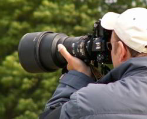

Inspirational Safaris in India & Africa
Inspirational Safaris in India & Africa

Nature and wildlife photography is a photographic discipline that encompasses a wide range of subject matter. Some nature and wildlife photographers focus on beautiful pictures of impressive landscapes...even stitching photos together to create wide, stunning panoramic images.
Most wildlife photographers, though, have to go to places like parks, free-roaming zoos, and wildlife reserves in search of wildlife subjects to photograph.
Those photographers who are lucky enough to live near game reserves or large lakes are especially blessed with great opportunities to capture photos of animals in their own natural habitat.
There is something immensely satisfying about photographing wildlife and nature. In many cases, it requires a great deal of patience and persistence to get the image that you want...sometimes the only way is a lot of trial and error. Animals and wildlife don’t pose for the camera or take direction, so it can be very challenging to get a great shot. Sometimes, it's simply a matter of good luck more than anything else!
Wildlife photography also requires photographers to develop their skills and knowledge of their tools of the trade. Skills such as adding or changing lenses for the proper focal length...depending on whether they are photographing a bumble bee or a moose. Even the basics such as learning to adjust the flash, ISO, and exposure time properly to capture images in less than perfect lighting conditions, such as in a dimly lit forest.
Probably the most compelling reason people are drawn to photographing nature and wildlife is that it provides an opportunity to connect with our natural world.
Top lighting effect is not ideal for photographing wildlife or landscapes; low side lighting is better for showing detail in wildlife subjects and creates more interesting shadows in landscapes. So it’s important to make full use of the light at sunrise and again in the later afternoon. While most wildlife photographs are taken with the sunlight behind the photographer thereby fully lighting the subject, it should be remembered that some spectacular images can be taken using side or back lighting, particularly using the warm glow created at sunrise and sunset. See our Tanzania Image Gallery depicting the various tactics used while photographing in the wild.
Correct exposure is the key to successful photography and modern cameras, with their built-in metering systems, go a long way to reducing the possibility of incorrect exposure. However there are situations where even the most complex metering system is going to struggle. A good example would be a white bird on very dark background, the meter is likely to try and expose correctly for the background, which will over exposure the bird. This is where a good understanding of your camera comes into play. Most SLR cameras will have a +/- (over/under exposure) override and, in the situation outlined above, you will need to under expose by about 1 to 2 stops to ensure correct exposure. The same effect can be obtained by doubling the (ISO) film speed i.e. 100 to 200ISO, but remember to change these setting back before moving on. In any situation where you are not sure about the exposure you can always bracket. For example if your metering reading is 1/60th at f8, take one picture at this setting, then two further exposures at 1/60th at f11 and 1/60th at f5.6, to do this you may have to switch the camera to manual mode or use the +/- override. See our Kenya Safari Photo Gallery depicting the usage of these various settings.
When the camera lens is focused to give a sharp image of a particular subject, other objects, closer or further away, do not appear equally as sharp. They can be made sharp by ‘stopping down’ using a smaller ‘f stop’. The higher the ‘f stop’ number, the more depth of field is available. It should be remembered that as you stop down your shutter speed will get slower and subject movement will become more of a problem.
‘Stopping down’ is important when photographing plants, insects and other small subjects as it reduces out of focus distractions. The opposite procedure can be used to help isolate your main centre of interest by making background or foreground distractions go out of focus.
Don’t forget that you can check the depth of field created by any given ‘f stop’, by using the depth of field button on your camera, This button allows you to preview the finished image though the view finder and to make adjustments to your own satisfaction prior to making any exposure.
Different shutter speeds produce varying effects with regard to subject blur and camera shake. Fast shutter speeds are desirable for stopping movement, such as flying birds and eliminating camera shake. It is worth remembering that is some situations movement of the subject during exposure can often result in a pleasing pictorial image.
The automation of modern cameras has taken away most of the technical pit falls of photography. Composition is the tool by which we can express our artistic thoughts and so demands an active input. It is therefore in your own interest to be fully conversant with the factors relating to good composition. Many newcomers to photography tend to produce all their images in a horizontal format, partly because of the layout of modern cameras which lend themselves to this shape. Remember they work equally well when turned through 90 degrees to a vertical format.
Changing your viewpoint can totally alter your image, we get used to seeing everything from a standing position, by kneeling or even lying down you are going to show an angle that we are not familiar with, which will often produce a more unusual result. A wide-angle lens used in this way can create some very interesting effects.
Think about where you are going to place the main point of interest in your image, avoid placing your subject in the centre of the frame. If it’s an animal, it needs room to move or to look into the picture space. A flying bird should be flying into the picture rather than out of it. Always attempt to get a ‘highlight’ in the eye, as this gives life to the subject. Do pay attention to the horizon line, particularly in landscapes and avoid splitting your picture in half, think in ‘thirds’. Zoom lenses have become a great asset by allowing control over subject size and perspective, with out moving the camera position.
By utilising a range of lenses it is often possible to secure an interesting sequence of images of an animal. The longest lenses for a close up of the head, through to a wide angle, which will show the landscape.
This is one of those wildlife photography tips that is particularly handy on a safari because often there is vegetation in the image that is distracting and blurring it gives more emphasis to the wildlife subject. If you are photographing a herd of elephant you might want to make sure that they are all in focus so you will try and limit the blurring present in the scene. The fancy name to describe the portion of the scene that appears sharp throughout the whole image is depth of field. But more important then knowing what it's called is knowing how to control it. Three factors affect depth of field: the aperture, the focal length of the lens, and the camera to subject distance.
Of these three, the aperture is the one that you have the most control over on a safari. A big aperture opening (e.g f/4.5) will lead to more background blurring while a small aperture (e.g f/22) will lead to the overall scene being sharper.
Remember which is which by matching up the similar first letters, so Big = Blurred and Small = Sharp. That tends to limit the confusion to a minimum. Make sure you know how to change the aperture opening on your gear before you go on safari.
A wildlife photograph where the subjects eyes are out of focus loses a lot of its appeal. The reason is probably that we as humans are naturally drawn towards looking at eyes and if you can't see them due to blurring it's a little jarring. Whatever the reason, always keep the eyes of your subject in focus and if you can capture the sun glinting in the pupil you get bonus points because that really livens up the picture.
Leave space for animals to move into when you frame your images. This may seem like one of the obvious wildlife photography tips but in the heat of the moment it's easy to forget the basics.
Hand holding your camera in safari wildlife photography is often a luxury because of the large lenses which magnify every vibration and the low light of dawn and dusk when the subjects are most active. So some kind of rest to lean your camera equipment on is a very good idea to keep your pictures pin sharp.
Most of your photography on safari will be done from inside a vehicle so a tripod to stabilize your camera is impractical. A beanbag does the job very well and it's very quick to set up. Simply place it on a convenient surface, rest your camera lens on it and click away. In open safari vehicles, a clamp onto an armrest or seat back is just what the doctor ordered to minimize blur. In closed vehicles, you can make use of window mounts. It's a little more inconvenient than a bean bag because you need to affix the camera to the mount each time you want to take a photo (the mount stays fixed to the window while you drive) but it does the job well.
Buying or renting a new camera and/or lens shortly before going on safari is not a good idea if you don't have time to practice and get some experience with it.
A safari is not the best time to learn because wildlife is unpredictable and often they aren't going to give you enough time to fiddle with the camera settings and setup before they disappear into the undergrowth. So you need a reasonable amount of practice with your camera and lens so that you can do things quickly. Also, it will be a huge disappointment if you go all the way to India and Africa and your safari pictures are not as good as they should be because you are inexperienced with your equipment. A safari is often a one time trip so you won't get any second chances. Make sure you are well acquainted with your equipment before you go.
Visit your local zoo or safari park to prepare. Pets also make excellent subjects to test your photographic skills on.
Either date and or number each film, using an indelible felt tip pen. Then, by keeping details notes of what you saw each day, you will then be able to accurately caption your photographs.
It should always be remembered that the welfare of the subject is more important the photograph. Do not go too close, Do not use flash if it might disturb the subject, Do not make lots of noise. Do not discard any form of litter. Take only pictures leave only memories!
The beauty of the natural world inspires us and frequently takes our breath away. So when we can capture that feeling or effect with beautiful nature photography, it's just an incredible sense of achievement!